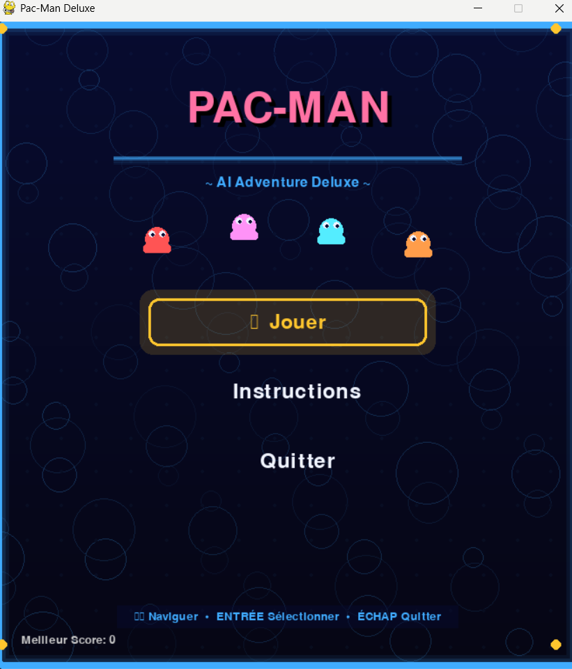
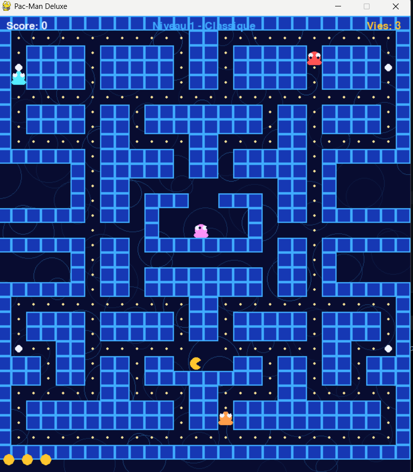
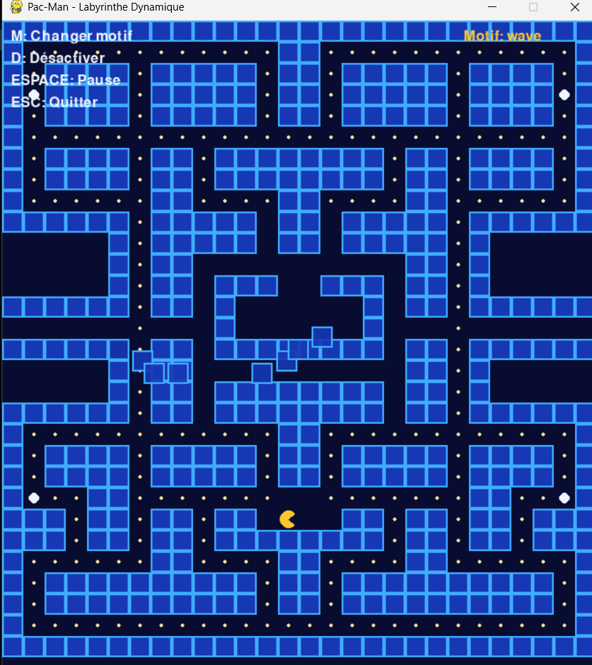

🎮 Pac-Man AI Adventure


Un clone moderne de Pac-Man avec intelligence artificielle avancée et apprentissage par renforcement
Fonctionnalités • Installation • Utilisation • Architecture • Technologies
🖼️ Aperçu



📋 Description
Pac-Man AI Adventure est une implémentation professionnelle du jeu classique Pac-Man en Python avec Pygame. Le projet combine :
- Pathfinding A* (heuristique Manhattan) intelligent pour les fantômes et Pac-Man
- Labyrinthe dynamique avec murs mobiles (motifs vague, spirale, aléatoire)
- Difficulté adaptative qui s’ajuste selon les performances du joueur
- Module Reinforcement Learning complet (PyTorch + Gymnasium) pour entraîner Pac-Man ou les fantômes
✨ Fonctionnalités
🤖 Intelligence Artificielle
- Algorithme A* (heuristique Manhattan) : Pathfinding optimisé pour grilles de jeu avec cache de chemins
- 4 fantômes avec comportements distincts :
- 🔴 Blinky (Rouge) : Agressif et direct
- Pinky (Rose) : Embuscades stratégiques
- 💙 Inky (Cyan) : Comportement imprévisible
- 🧡 Clyde (Orange) : Timide mais rusé
- Modes multiples : Scatter, Chase, Frightened, Eaten
- Autopilote Pac-Man : Navigation automatique vers une destination
- Replanification en temps réel lors de changements du labyrinthe
🧠 Module Reinforcement Learning
- Agents DQN (PyTorch) pour Pac-Man et fantômes
- Environnement Gymnasium avec observations complètes et récompenses intelligentes
- Labyrinthe dynamique complexifiant l’apprentissage
- Difficulté adaptative ajustant la vitesse/intelligence selon les performances
- TensorBoard pour visualiser les métriques d’entraînement
- Sauvegarde/chargement de modèles en
.pt
🎨 Interface & Graphismes
- Menu principal animé avec effets visuels
- Écran d’instructions détaillé
- Animations fluides des personnages
- Effets de particules et dégradés
- Interface utilisateur intuitive
🎮 Gameplay
- Mouvement fluide sur grille avec interpolation
- Système de collision précis
- Régénération automatique des pellets
- Condition de victoire : manger tous les fantômes
- Score et statistiques en temps réel
- Mode “power pellet” pour vulnérabiliser les fantômes
🚀 Installation
Prérequis
- Python 3.10+ (3.11.0 recommandé)
- pip (gestionnaire de paquets)
- PyTorch (installé automatiquement via
requirements.txt) - Windows PowerShell ou terminal compatible
Étapes Installation
# 1. Cloner le dépôt
git clone https://github.com/mzmantar/Pac-Man---AI-Adventure.git
cd Pac-Man---AI-Adventure
# 2. Créer environnement virtuel
python -m venv .venv
# 3. Activer l'environnement virtuel
.\.venv\Scripts\Activate.ps1
# Si erreur de politique d'exécution :
# Set-ExecutionPolicy -ExecutionPolicy RemoteSigned -Scope CurrentUser
# 4. Installer les dépendances
pip install -r requirements.txt🎯 Utilisation
🕹️ Lancer le Jeu
python main.pyContrôles en Jeu
| Touche | Action |
|---|---|
| ←→↑↓ | Déplacer Pac-Man |
| C | Activer/Désactiver autopilote IA |
| Clic gauche | Définir destination (A* automatique) |
| ÉCHAP | Pause / Retour au menu |
Objectifs
- 🎯 Manger TOUS les fantômes pour gagner
- 🔵 Power Pellets rendent les fantômes vulnérables (bleus)
- ⭐ Fantôme mangé = +200 points
- ♻️ Pellets se régénèrent automatiquement
🧪 Démos RL/IA
python demo_rl.pyOption 1 - Labyrinthe Dynamique (interactif) : - M : Changer motif (vague/spirale/aléatoire) - D : Désactiver mouvements - ESPACE : Pause - ESC : Quitter
Option 2 - Difficulté Adaptative (simulation) : - Observe les ajustements de vitesse/intelligence des fantômes - 20 parties simulées avec log détaillé
🤖 Entraîner un Agent RL
python -m src.rl.trainer --agent pacman --episodes 1000 --steps 1000 --save-dir models --renderParamètres : - --agent pacman|ghost : Qui entraîner - --render : Afficher le jeu pendant l’entraînement - --load chemin.pt : Reprendre un modèle existant - --save-dir : Dossier de sortie (modèles + logs TensorBoard) - --episodes / --steps : Limites d’entraînement
Visualiser les métriques :
tensorboard --logdir models/pacman/logs🏗️ Architecture
Structure du Projet
pac_man/
│
├── main.py # Point d'entrée principal
├── demo_rl.py # Démos labyrinthe dynamique + difficulté adaptative
├── requirements.txt # Dépendances Python
├── README.md # Cette documentation
│
└── src/
├── __init__.py
├── settings.py # Constantes, couleurs, configuration
├── menu.py # Système de menus avec animations
├── game.py # Boucle principale du jeu
├── maze.py # Labyrinthe, pellets, génération
├── entities.py # Pac-Man, Ghosts, entités du jeu
│
├── ai/
│ ├── pathfinding.py # Implémentation A*
│ └── controller.py # Logique décision fantômes
│
└── rl/
├── adaptive_difficulty.py # Gestionnaire difficulté adaptative
├── dynamic_maze.py # Labyrinthe avec murs mobiles
├── rl_environment.py # Environnement Gymnasium
├── rl_agent.py # Agents DQN (PyTorch)
└── trainer.py # Script d'entraînement + TensorBoardModules Clés
🎮 game.py
Boucle principale, gestion événements, collisions, rendu victoire/défaite
🗺️ maze.py
Génération labyrinthe, gestion pellets, régénération, affichage terrain
👾 entities.py
Classes Pacman et Ghost avec animations, états, modes
🤖 ai/pathfinding.py
Algorithme A* (Heuristique Manhattan) : Optimisé pour grilles, cache de chemins pour performance, utilisé par tous les agents
🧠 ai/controller.py
Gestion modes fantômes, calcul cibles, coordination multi-agents
💡 rl/rl_agent.py
Agents DQN, réseaux de neurones PyTorch, replay buffer, epsilon-greedy
🎓 rl/rl_environment.py
Environnement Gymnasium, observations, actions, récompenses
📈 rl/trainer.py
Script d’entraînement avec TensorBoard, sauvegarde modèles, évaluation
⚙️ rl/adaptive_difficulty.py
Gestionnaire difficulté, ajustement dynamique basé sur performances
🎨 rl/dynamic_maze.py
Labyrinthe avec murs mobiles, motifs (vague, spirale, aléatoire)
🛠️ Technologies Utilisées
| Technologie | Version | Usage |
|---|---|---|
| Python | 3.11.0 | Langage principal |
| Pygame | 2.6.1 | Moteur graphique 2D |
| PyTorch | 2.x+ | Deep Q-Learning |
| Gymnasium | 0.29.0+ | Environnements RL |
| TensorBoard | 2.15.0+ | Visualisation métriques |
| NumPy | 1.24.0+ | Calculs numériques |
📊 Système de Jeu
Comportements Fantômes
- Scatter : Patrouille coins respectifs
- Chase : Poursuite active de Pac-Man
- Frightened : Mouvement aléatoire (vulnérable)
- Eaten : Retour au spawn
Système de Score
| Action | Points |
|---|---|
| Petit pellet | +10 |
| Power pellet | +50 |
| Fantôme mangé | +200 |
| Victoire | Bonus |
🐛 Dépannage
Le jeu ne se lance pas
python --version # Vérifier Python 3.10+
pip install --upgrade -r requirements.txt # Réinstaller dépendancesErreur d’importation
.\.venv\Scripts\Activate.ps1 # Activer env virtuel
pip show pygame # Vérifier installationPerformance lente
- Réduire particules dans
menu.py - Vérifier drivers graphiques à jour
- Fermer applications gourmandes
🤝 Contribution
Les contributions sont bienvenues !
- Fork le projet
- Créez branche :
git checkout -b feature/MaFeature - Committez :
git commit -m 'Add: MaFeature' - Push :
git push origin feature/MaFeature - Ouvrez Pull Request
📝 License
Projet sous licence MIT. Voir LICENSE pour détails.
👨💻 Auteur
mzmantar
- GitHub : @mzmantar
- Repository : Pac-Man—AI-Adventure
Dernière mise à jour : 6 janvier 2026